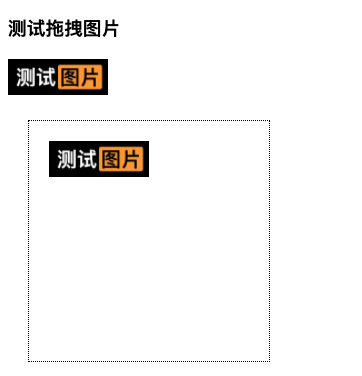
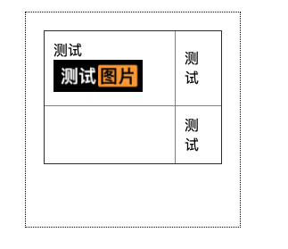

H5原生拖放(Drag and Drop)demo以及浏览器兼容性处理
这篇文章发布于 2020/08/22，归类于 Javascript
标签：
js拖拽，原生js拖放，js拖放，js拖放浏览器兼容性，HTML5 拖放，dragstart，drop
一般在网页中，如果需要实现拖放，首先要有两个元素
- 可拖动的元素，元素draggable="true"属性就是可拖放，如果设置为false就是不可拖放
- 可以放置的区域，注意chrome如果不将放置区域的onenter和onover事件阻止默认行为，无法触发drop函数

拖放的过程中的钩子
- 拖动元素时，会触发元素的 dragstart 钩子函数，在函数里可以设置数据、以及拖动到放置区域的鼠标样式
- 当拖动元素进入放置区域时，放置区域元素会触发一次dragenter钩子(拖动进入)，触发多次dragover(拖动元素在放置区域移动中)，放下时再触发放置元素的drop钩子，这里可以用来接收拖拽元素dragstart设置的data，处理拖动的行为
注意事项：浏览器兼容性处理
在Chrome中，放置区域的ondrop事件不触发，需要在onenter和onover事件里阻止默认行为（火狐不需要这样处理）
event.dataTransfer.effectAllowed只能设置鼠标样式，不能设置拖动元素行为，drag后之前的元素会消失，想要保留需要使用cloneNode来操作
// 放置后，删除原来的图片
// ev.target.appendChild(document.querySelector(`#${reciveData}`))
// 放置后，保留原图片
ev.target.appendChild(document.querySelector(`#${reciveData}`).cloneNode(true))- 在Firefox（火狐）浏览器里drop图片后，会新在新的tab也打开图片，不仅要在drop里阻止默认行为，还要阻止事件冒泡
demo实例
demo如下，demo 在线体验地址，demo github源码

<!-- 图片默认的 draggable="true" 而想 h1这种默认为false不可拖动 -->
<img id="img" src="test.png" >
<!-- 放置区域a -->
<div class="wrap" id="targetA"></div>
<script>
// 被拖动元素的事件监听
let img = document.getElementById('img')
// 当元素开始拖动时触发，仅触发一次
img.addEventListener('dragstart', (ev) => {
// 设置值，在放置区域触发drop事件时，可以通过ev.dataTransfer.getData获取这里的值
ev.dataTransfer.setData("text", ev.target.id)
// link 会影响拖动到放置区域的鼠标样式，只是样式，并不决定行为
ev.dataTransfer.effectAllowed = 'copy';
})
// 放置区域A的事件监听
let targetA = document.getElementById('targetA')
// 当有拖动元素(放到)落到放置区域时触发，一次
targetA.addEventListener('drop', (ev) => {
ev.stopPropagation(); // 必要，阻止冒泡，防止火狐浏览器放置图片后打开新的窗口
ev.preventDefault(); // 必要，阻止默认行为 防止火狐浏览器放置后直接打开图片
// 放置落下时，接收被拖拽的元素在 dragstart时用ev.dataTransfer.setData设置的值
// 这里传的id备用
let reciveData = ev.dataTransfer.getData("text")
console.log('drop, recive data', reciveData, ev.dataTransfer.dropEffect)
// 必要，设置拖动后放置的效果，移动还是copy
// 放置后，删除原来的图片
// ev.target.appendChild(document.querySelector(`#${reciveData}`))
// 放置后，保留原图片
ev.target.appendChild(document.querySelector(`#${reciveData}`).cloneNode(true))
ev.target.classList.remove('active') // 必要，放置在区域里后，还原样式
})
// 当拖动元素移动到放置区域时触发，触发多次
targetA.addEventListener('dragover', (ev) => {
ev.preventDefault() // 必要，chrome drop兼容必须
})
// 当拖动元素进入放置区域时触发，一次
targetA.addEventListener('dragenter', (ev) => {
ev.preventDefault() // 必要，chrome drop兼容必须
ev.target.classList.add('active') // 必要，设置进入时的样式
})
// 当拖动元素离开放置区域时触发，一次
targetA.addEventListener('dragleave', (ev) => {
ev.target.classList.remove('active') // 必要，设置离开后的样式
})
</script>参考资料文档
- HTML 拖放 API - Web API 接口参考 | MDN
- dataTransfer.setData无效，drop不触发的问题
- 火狐drop后会打开新tab的问题
- js 拖动后,怎么保持原来的元素不消失，drop后拖动元素消失的问题
- cloneNode | JS高程3笔记
扩展：